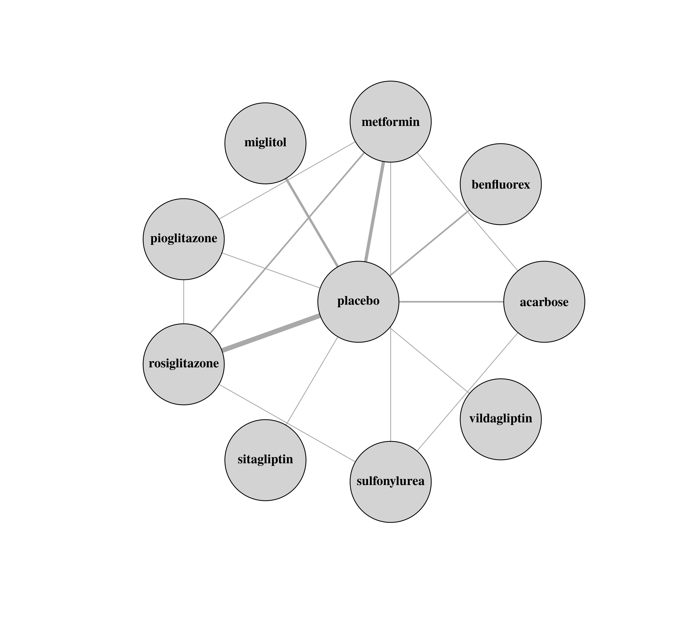
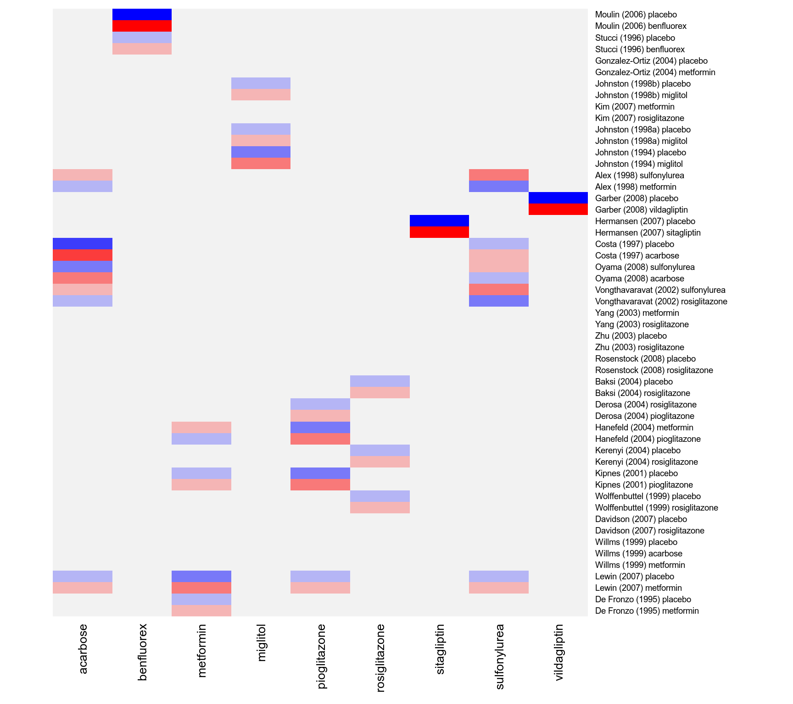
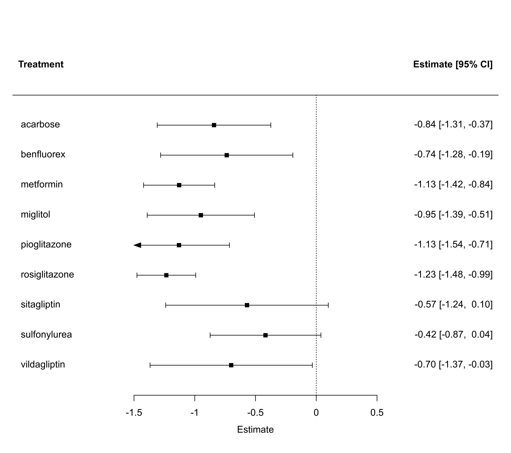

dat.senn2013.RdResults from 26 trials examining the effectiveness of glucose-lowering agents in patients with type 2 diabetes
dat.senn2013The data frame contains the following columns:
| study | character | (first) author and year of study |
| ni | numeric | sample size of the study arm |
| treatment | character | treatment given |
| comment | character | whether figures given are based on raw values at outcome or on change from baseline |
| mi | numeric | raw mean or mean change |
| sdi | numeric | standard deviation |
The dataset includes the results from 26 randomized controlled trials examining the effectiveness of adding various oral glucose-lowering agents to a baseline sulfonylurea therapy in patients with type 2 diabetes. The outcome measured in the studies was either the mean HbA1c level at follow-up or the mean change in HbA1c level from baseline to follow-up. A total of 10 different treatment types were examined in these studies: acarbose, benfluorex, metformin, miglitol, pioglitazone, placebo, rosiglitazone, sitagliptin, sulfonylurea alone, and vildagliptin. One study included three treatment arms (Willms, 1999), while the rest of the studies included two treatment arms (hence, the dataset includes the results from 53 treatment arms).
The data can be used for a network meta-analysis, either using an arm-based or a contrast-based model. See ‘Examples’ below.
Senn, S., Gavini, F., Magrez, D., & Scheen, A. (2013). Issues in performing a network meta-analysis. Statistical Methods in Medical Research, 22(2), 169–189. https://doi.org/10.1177/0962280211432220
Law, M., Jackson, D., Turner, R., Rhodes, K., & Viechtbauer, W. (2016). Two new methods to fit models for network meta-analysis with random inconsistency effects. BMC Medical Research Methodology, 16, 87. https://doi.org/10.1186/s12874-016-0184-5
Rücker, G., & Schwarzer, G. (2015). Ranking treatments in frequentist network meta-analysis works without resampling methods. BMC Medical Research Methodology, 15, 58. https://doi.org/10.1186/s12874-015-0060-8
medicine, raw mean differences, network meta-analysis
### copy data into 'dat' and examine data
dat <- dat.senn2013
dat
#> study ni treatment comment mi sdi
#> 1 De Fronzo (1995) 213 metformin change -1.70 1.459
#> 2 De Fronzo (1995) 209 placebo change 0.20 1.446
#> 3 Lewin (2007) 431 metformin change -0.74 1.106
#> 4 Lewin (2007) 144 placebo change 0.08 1.004
#> 5 Willms (1999) 29 metformin change -2.50 0.862
#> 6 Willms (1999) 31 acarbose change -2.30 1.782
#> 7 Willms (1999) 29 placebo change -1.30 1.831
#> 8 Davidson (2007) 117 rosiglitazone change -1.20 1.097
#> 9 Davidson (2007) 116 placebo change 0.14 1.093
#> 10 Wolffenbuttel (1999) 183 rosiglitazone change -0.90 1.100
#> 11 Wolffenbuttel (1999) 192 placebo change 0.20 1.110
#> 12 Kipnes (2001) 182 pioglitazone change -1.20 1.369
#> 13 Kipnes (2001) 181 placebo change 0.10 1.024
#> 14 Kerenyi (2004) 160 rosiglitazone change -0.91 0.990
#> 15 Kerenyi (2004) 154 placebo change -0.14 0.920
#> 16 Hanefeld (2004) 319 pioglitazone raw 7.61 1.072
#> 17 Hanefeld (2004) 320 metformin raw 7.45 1.073
#> 18 Derosa (2004) 45 pioglitazone raw 6.80 0.800
#> 19 Derosa (2004) 42 rosiglitazone raw 6.70 0.900
#> 20 Baksi (2004) 218 rosiglitazone change -1.20 1.112
#> 21 Baksi (2004) 233 placebo change 0.10 1.036
#> 22 Rosenstock (2008) 59 rosiglitazone change -1.17 1.229
#> 23 Rosenstock (2008) 57 placebo change -0.08 1.208
#> 24 Zhu (2003) 210 rosiglitazone change -1.90 1.470
#> 25 Zhu (2003) 105 placebo change -0.40 1.300
#> 26 Yang (2003) 102 rosiglitazone change -1.09 1.650
#> 27 Yang (2003) 96 metformin change -0.95 1.500
#> 28 Vongthavaravat (2002) 164 rosiglitazone change -1.10 1.559
#> 29 Vongthavaravat (2002) 170 sulfonylurea change 0.10 0.992
#> 30 Oyama (2008) 41 acarbose change -0.70 0.800
#> 31 Oyama (2008) 43 sulfonylurea change -0.30 0.600
#> 32 Costa (1997) 36 acarbose change -1.10 0.360
#> 33 Costa (1997) 29 placebo change -0.30 0.700
#> 34 Hermansen (2007) 106 sitagliptin change -0.30 0.940
#> 35 Hermansen (2007) 106 placebo change 0.27 0.940
#> 36 Garber (2008) 132 vildagliptin change -0.63 1.034
#> 37 Garber (2008) 144 placebo change 0.07 1.080
#> 38 Alex (1998) 291 metformin change 0.13 1.428
#> 39 Alex (1998) 300 sulfonylurea change 0.50 1.450
#> 40 Johnston (1994) 68 miglitol change -0.41 1.072
#> 41 Johnston (1994) 63 placebo change 0.33 1.032
#> 42 Johnston (1998a) 91 miglitol change -0.43 0.954
#> 43 Johnston (1998a) 43 placebo change 0.98 1.311
#> 44 Kim (2007) 57 rosiglitazone change -1.10 1.341
#> 45 Kim (2007) 56 metformin change -1.10 1.139
#> 46 Johnston (1998b) 49 miglitol change -0.12 1.400
#> 47 Johnston (1998b) 34 placebo change 0.56 1.166
#> 48 Gonzalez-Ortiz (2004) 34 metformin change -1.30 1.861
#> 49 Gonzalez-Ortiz (2004) 37 placebo change -0.90 1.803
#> 50 Stucci (1996) 28 benfluorex raw 8.03 1.290
#> 51 Stucci (1996) 30 placebo raw 8.26 1.350
#> 52 Moulin (2006) 161 benfluorex change -0.82 1.028
#> 53 Moulin (2006) 156 placebo change 0.19 1.374
# \dontrun{
### load metafor package
library(metafor)
### create network graph ('igraph' package must be installed)
library(igraph, warn.conflicts=FALSE)
pairs <- data.frame(do.call(rbind,
sapply(split(dat$treatment, dat$study), function(x) t(combn(x,2)))), stringsAsFactors=FALSE)
pairs$X1 <- factor(pairs$X1, levels=sort(unique(dat$treatment)))
pairs$X2 <- factor(pairs$X2, levels=sort(unique(dat$treatment)))
tab <- table(pairs[,1], pairs[,2])
tab # adjacency matrix
#>
#> acarbose benfluorex metformin miglitol pioglitazone placebo rosiglitazone sitagliptin
#> acarbose 0 0 0 0 0 2 0 0
#> benfluorex 0 0 0 0 0 2 0 0
#> metformin 1 0 0 0 0 4 0 0
#> miglitol 0 0 0 0 0 3 0 0
#> pioglitazone 0 0 1 0 0 1 1 0
#> placebo 0 0 0 0 0 0 0 0
#> rosiglitazone 0 0 2 0 0 6 0 0
#> sitagliptin 0 0 0 0 0 1 0 0
#> sulfonylurea 0 0 0 0 0 0 0 0
#> vildagliptin 0 0 0 0 0 1 0 0
#>
#> sulfonylurea vildagliptin
#> acarbose 1 0
#> benfluorex 0 0
#> metformin 1 0
#> miglitol 0 0
#> pioglitazone 0 0
#> placebo 0 0
#> rosiglitazone 1 0
#> sitagliptin 0 0
#> sulfonylurea 0 0
#> vildagliptin 0 0
g <- graph_from_adjacency_matrix(tab, mode = "plus", weighted=TRUE, diag=FALSE)
plot(g, edge.curved=FALSE, edge.width=E(g)$weight, layout=layout_as_star(g, center="placebo"),
vertex.size=45, vertex.color="lightgray", vertex.label.color="black", vertex.label.font=2)

### table of studies versus treatments examined
print(addmargins(table(dat$study, dat$treatment)), zero.print="")
#>
#> acarbose benfluorex metformin miglitol pioglitazone placebo rosiglitazone
#> Alex (1998) 1
#> Baksi (2004) 1 1
#> Costa (1997) 1 1
#> Davidson (2007) 1 1
#> De Fronzo (1995) 1 1
#> Derosa (2004) 1 1
#> Garber (2008) 1
#> Gonzalez-Ortiz (2004) 1 1
#> Hanefeld (2004) 1 1
#> Hermansen (2007) 1
#> Johnston (1994) 1 1
#> Johnston (1998a) 1 1
#> Johnston (1998b) 1 1
#> Kerenyi (2004) 1 1
#> Kim (2007) 1 1
#> Kipnes (2001) 1 1
#> Lewin (2007) 1 1
#> Moulin (2006) 1 1
#> Oyama (2008) 1
#> Rosenstock (2008) 1 1
#> Stucci (1996) 1 1
#> Vongthavaravat (2002) 1
#> Willms (1999) 1 1 1
#> Wolffenbuttel (1999) 1 1
#> Yang (2003) 1 1
#> Zhu (2003) 1 1
#> Sum 3 2 8 3 3 19 10
#>
#> sitagliptin sulfonylurea vildagliptin Sum
#> Alex (1998) 1 2
#> Baksi (2004) 2
#> Costa (1997) 2
#> Davidson (2007) 2
#> De Fronzo (1995) 2
#> Derosa (2004) 2
#> Garber (2008) 1 2
#> Gonzalez-Ortiz (2004) 2
#> Hanefeld (2004) 2
#> Hermansen (2007) 1 2
#> Johnston (1994) 2
#> Johnston (1998a) 2
#> Johnston (1998b) 2
#> Kerenyi (2004) 2
#> Kim (2007) 2
#> Kipnes (2001) 2
#> Lewin (2007) 2
#> Moulin (2006) 2
#> Oyama (2008) 1 2
#> Rosenstock (2008) 2
#> Stucci (1996) 2
#> Vongthavaravat (2002) 1 2
#> Willms (1999) 3
#> Wolffenbuttel (1999) 2
#> Yang (2003) 2
#> Zhu (2003) 2
#> Sum 1 3 1 53
### table of frequencies with which treatment pairs were studied
print(as.table(crossprod(table(dat$study, dat$treatment))), zero.print="")
#>
#> acarbose benfluorex metformin miglitol pioglitazone placebo rosiglitazone sitagliptin
#> acarbose 3 1 2
#> benfluorex 2 2
#> metformin 1 8 1 4 2
#> miglitol 3 3
#> pioglitazone 1 3 1 1
#> placebo 2 2 4 3 1 19 6 1
#> rosiglitazone 2 1 6 10
#> sitagliptin 1 1
#> sulfonylurea 1 1 1
#> vildagliptin 1
#>
#> sulfonylurea vildagliptin
#> acarbose 1
#> benfluorex
#> metformin 1
#> miglitol
#> pioglitazone
#> placebo 1
#> rosiglitazone 1
#> sitagliptin
#> sulfonylurea 3
#> vildagliptin 1
### add means and sampling variances of the means to the dataset
dat <- escalc(measure="MN", mi=mi, sdi=sdi, ni=ni, data=dat)
### turn treatment variable into factor and set reference level
dat$treatment <- relevel(factor(dat$treatment), ref="placebo")
### add a space before each level (this makes the output a bit more legible)
levels(dat$treatment) <- paste0(" ", levels(dat$treatment))
### network meta-analysis using an arm-based fixed-effects model with fixed study effects
res.fe <- rma.mv(yi, vi, mods = ~ study + treatment - 1, data=dat, slab=paste0(study, treatment))
res.fe
#>
#> Multivariate Meta-Analysis Model (k = 53; method: REML)
#>
#> Variance Components: none
#>
#> Test for Residual Heterogeneity:
#> QE(df = 18) = 96.9841, p-val < .0001
#>
#> Test of Moderators (coefficients 1:35):
#> QM(df = 35) = 42156.8401, p-val < .0001
#>
#> Model Results:
#>
#> estimate se zval pval ci.lb ci.ub
#> studyAlex (1998) 1.0917 0.0866 12.6029 <.0001 0.9219 1.2615 ***
#> studyBaksi (2004) 0.0560 0.0548 1.0230 0.3063 -0.0513 0.1633
#> studyCosta (1997) -0.2775 0.1047 -2.6496 0.0081 -0.4827 -0.0722 **
#> studyDavidson (2007) 0.0709 0.0756 0.9377 0.3484 -0.0773 0.2191
#> studyDe Fronzo (1995) -0.1932 0.0767 -2.5176 0.0118 -0.3436 -0.0428 *
#> studyDerosa (2004) 7.8814 0.1041 75.7432 <.0001 7.6774 8.0853 ***
#> studyGarber (2008) 0.0700 0.0900 0.7778 0.4367 -0.1064 0.2464
#> studyGonzalez-Ortiz (2004) -0.5693 0.2189 -2.6004 0.0093 -0.9984 -0.1402 **
#> studyHanefeld (2004) 8.6201 0.0724 119.1426 <.0001 8.4783 8.7619 ***
#> studyHermansen (2007) 0.2700 0.0913 2.9573 0.0031 0.0911 0.4489 **
#> studyJohnston (1994) 0.4319 0.1117 3.8667 0.0001 0.2130 0.6509 ***
#> studyJohnston (1998a) 0.6071 0.1353 4.4877 <.0001 0.3420 0.8723 ***
#> studyJohnston (1998b) 0.6919 0.1550 4.4642 <.0001 0.3881 0.9957 ***
#> studyKerenyi (2004) 0.0642 0.0584 1.1008 0.2710 -0.0501 0.1786
#> studyKim (2007) 0.0512 0.1235 0.4147 0.6783 -0.1908 0.2933
#> studyKipnes (2001) 0.0158 0.0667 0.2375 0.8123 -0.1149 0.1466
#> studyLewin (2007) 0.2892 0.0618 4.6804 <.0001 0.1681 0.4103 ***
#> studyMoulin (2006) 0.1220 0.1051 1.1609 0.2457 -0.0840 0.3280
#> studyOyama (2008) 0.1352 0.1100 1.2290 0.2191 -0.0804 0.3508
#> studyRosenstock (2008) -0.0241 0.1156 -0.2082 0.8351 -0.2507 0.2025
#> studyStucci (1996) 8.6013 0.1849 46.5307 <.0001 8.2390 8.9636 ***
#> studyVongthavaravat (2002) 0.4165 0.0954 4.3644 <.0001 0.2295 0.6035 ***
#> studyWillms (1999) -1.3878 0.1402 -9.9014 <.0001 -1.6625 -1.1131 ***
#> studyWolffenbuttel (1999) 0.2502 0.0617 4.0542 <.0001 0.1292 0.3711 ***
#> studyYang (2003) 0.1396 0.1196 1.1680 0.2428 -0.0947 0.3740
#> studyZhu (2003) -0.5819 0.0844 -6.8947 <.0001 -0.7473 -0.4165 ***
#> treatment acarbose -0.8273 0.1085 -7.6252 <.0001 -1.0400 -0.6147 ***
#> treatment benfluorex -0.9051 0.1271 -7.1211 <.0001 -1.1543 -0.6560 ***
#> treatment metformin -1.1140 0.0596 -18.6892 <.0001 -1.2309 -0.9972 ***
#> treatment miglitol -0.9438 0.1269 -7.4375 <.0001 -1.1926 -0.6951 ***
#> treatment pioglitazone -1.0663 0.0758 -14.0590 <.0001 -1.2149 -0.9176 ***
#> treatment rosiglitazone -1.2019 0.0477 -25.2158 <.0001 -1.2953 -1.1084 ***
#> treatment sitagliptin -0.5700 0.1291 -4.4145 <.0001 -0.8231 -0.3169 ***
#> treatment sulfonylurea -0.4394 0.0915 -4.8041 <.0001 -0.6187 -0.2601 ***
#> treatment vildagliptin -0.7000 0.1273 -5.4998 <.0001 -0.9495 -0.4505 ***
#>
#> ---
#> Signif. codes: 0 ‘***’ 0.001 ‘**’ 0.01 ‘*’ 0.05 ‘.’ 0.1 ‘ ’ 1
#>
### test if treatment factor as a whole is significant
anova(res.fe, btt="treatment")
#>
#> Test of Moderators (coefficients 27:35):
#> QM(df = 9) = 1060.3371, p-val < .0001
#>
### forest plot of the contrast estimates (treatments versus placebos)
forest(tail(coef(res.fe), 9), tail(diag(vcov(res.fe)), 9), slab=levels(dat$treatment)[-1],
xlim=c(-2.5, 2.0), alim=c(-1.5, 0.5), psize=1, xlab="Estimate", header="Treatment")
### weight matrix for the estimation of the fixed effects (leaving out the study effects)
w <- t(tail(vcov(res.fe) %*% t(model.matrix(res.fe)) %*% weights(res.fe, type="matrix"), 9))
rownames(w) <- res.fe$slab
### create shade plot for the diabetes network with placebo as the reference treatment
### negative values in blue shades, positive values in red shades
cols <- colorRampPalette(c("blue", "gray95", "red"))(9)
heatmap(w, Rowv=NA, Colv=NA, scale="none", margins=c(6,11), col=cols,
cexRow=.7, cexCol=1, labCol=levels(dat$treatment)[-1])

### network meta-analysis using an arm-based random-effects model with fixed study effects
### by setting rho=1/2, tau^2 reflects the amount of heterogeneity for all treatment comparisons
res.re <- rma.mv(yi, vi, mods = ~ study + treatment - 1, random = ~ treatment | study, rho=1/2,
data=dat, slab=paste0(study, treatment))
res.re
#>
#> Multivariate Meta-Analysis Model (k = 53; method: REML)
#>
#> Variance Components:
#>
#> outer factor: study (nlvls = 26)
#> inner factor: treatment (nlvls = 10)
#>
#> estim sqrt fixed
#> tau^2 0.0999 0.3161 no
#> rho 0.5000 yes
#>
#> Test for Residual Heterogeneity:
#> QE(df = 18) = 96.9841, p-val < .0001
#>
#> Test of Moderators (coefficients 1:35):
#> QM(df = 35) = 2237.5843, p-val < .0001
#>
#> Model Results:
#>
#> estimate se zval pval ci.lb ci.ub
#> studyAlex (1998) 1.0880 0.3221 3.3777 0.0007 0.4567 1.7193 ***
#> studyBaksi (2004) 0.0672 0.2850 0.2357 0.8136 -0.4915 0.6258
#> studyCosta (1997) -0.2770 0.3118 -0.8885 0.3743 -0.8881 0.3341
#> studyDavidson (2007) 0.0869 0.2896 0.2999 0.7643 -0.4808 0.6546
#> studyDe Fronzo (1995) -0.1858 0.2924 -0.6355 0.5251 -0.7590 0.3873
#> studyDerosa (2004) 7.9315 0.3197 24.8072 <.0001 7.3048 8.5581 ***
#> studyGarber (2008) 0.0700 0.3287 0.2130 0.8313 -0.5742 0.7142
#> studyGonzalez-Ortiz (2004) -0.5534 0.3567 -1.5514 0.1208 -1.2526 0.1458
#> studyHanefeld (2004) 8.6589 0.3139 27.5871 <.0001 8.0437 9.2741 ***
#> studyHermansen (2007) 0.2700 0.3290 0.8206 0.4119 -0.3749 0.9149
#> studyJohnston (1994) 0.4349 0.3100 1.4033 0.1605 -0.1726 1.0424
#> studyJohnston (1998a) 0.7039 0.3228 2.1808 0.0292 0.0713 1.3366 *
#> studyJohnston (1998b) 0.6949 0.3280 2.1184 0.0341 0.0520 1.3379 *
#> studyKerenyi (2004) 0.0906 0.2857 0.3170 0.7512 -0.4693 0.6505
#> studyKim (2007) 0.0782 0.3180 0.2460 0.8057 -0.5450 0.7014
#> studyKipnes (2001) 0.0180 0.2988 0.0603 0.9519 -0.5676 0.6037
#> studyLewin (2007) 0.2400 0.2887 0.8314 0.4058 -0.3259 0.8060
#> studyMoulin (2006) 0.0471 0.3172 0.1484 0.8820 -0.5747 0.6689
#> studyOyama (2008) 0.1287 0.3461 0.3720 0.7099 -0.5496 0.8071
#> studyRosenstock (2008) -0.0081 0.3026 -0.0269 0.9786 -0.6012 0.5849
#> studyStucci (1996) 8.5150 0.3528 24.1346 <.0001 7.8235 9.2065 ***
#> studyVongthavaravat (2002) 0.3400 0.3210 1.0594 0.2894 -0.2890 0.9691
#> studyWillms (1999) -1.3770 0.3168 -4.3471 <.0001 -1.9978 -0.7561 ***
#> studyWolffenbuttel (1999) 0.2668 0.2863 0.9316 0.3515 -0.2945 0.8280
#> studyYang (2003) 0.1614 0.3161 0.5108 0.6095 -0.4581 0.7810
#> studyZhu (2003) -0.5392 0.2926 -1.8427 0.0654 -1.1128 0.0343 .
#> treatment acarbose -0.8414 0.2384 -3.5288 0.0004 -1.3087 -0.3741 ***
#> treatment benfluorex -0.7369 0.2776 -2.6545 0.0079 -1.2810 -0.1928 **
#> treatment metformin -1.1284 0.1494 -7.5528 <.0001 -1.4212 -0.8356 ***
#> treatment miglitol -0.9499 0.2253 -4.2170 <.0001 -1.3914 -0.5084 ***
#> treatment pioglitazone -1.1294 0.2119 -5.3295 <.0001 -1.5448 -0.7141 ***
#> treatment rosiglitazone -1.2337 0.1235 -9.9933 <.0001 -1.4757 -0.9918 ***
#> treatment sitagliptin -0.5700 0.3414 -1.6694 0.0950 -1.2392 0.0992 .
#> treatment sulfonylurea -0.4175 0.2326 -1.7950 0.0727 -0.8734 0.0384 .
#> treatment vildagliptin -0.7000 0.3408 -2.0543 0.0400 -1.3679 -0.0321 *
#>
#> ---
#> Signif. codes: 0 ‘***’ 0.001 ‘**’ 0.01 ‘*’ 0.05 ‘.’ 0.1 ‘ ’ 1
#>
### test if treatment factor as a whole is significant
anova(res.re, btt="treatment")
#>
#> Test of Moderators (coefficients 27:35):
#> QM(df = 9) = 167.9616, p-val < .0001
#>
### forest plot of the contrast estimates (treatments versus placebos)
forest(tail(coef(res.re), 9), tail(diag(vcov(res.re)), 9), slab=levels(dat$treatment)[-1],
xlim=c(-3.0, 2.5), alim=c(-1.5, 0.5), psize=1, xlab="Estimate", header="Treatment")

### compute the contribution of each study to the overall Q-test value
qi <- sort(by((resid(res.fe) / sqrt(dat$vi))^2, dat$study, sum))
### check that the values add up
sum(qi)
#> [1] 96.98407
res.fe$QE
#> [1] 96.98407
### plot the values
s <- length(qi)
par(mar=c(5,10,2,1))
plot(qi, 1:s, pch=19, xaxt="n", yaxt="n", xlim=c(0,40), xlab="Chi-Square Contribution", ylab="")
axis(side=1)
axis(side=2, at=1:s, labels=names(qi), las=1, tcl=0)
segments(rep(0,s), 1:s, qi, 1:s)
############################################################################
### restructure dataset to a contrast-based format
dat <- dat.senn2013[c(1,4:2,5:6)] # reorder variables first
dat <- to.wide(dat, study="study", grp="treatment", ref="placebo", grpvars=4:6)
dat
#> study comment treatment.1 ni.1 mi.1 sdi.1 treatment.2 ni.2 mi.2 sdi.2 id
#> 1 Alex (1998) change metformin 291 0.13 1.428 sulfonylurea 300 0.50 1.450 1
#> 2 Baksi (2004) change rosiglitazone 218 -1.20 1.112 placebo 233 0.10 1.036 2
#> 3 Costa (1997) change acarbose 36 -1.10 0.360 placebo 29 -0.30 0.700 3
#> 4 Davidson (2007) change rosiglitazone 117 -1.20 1.097 placebo 116 0.14 1.093 4
#> 5 De Fronzo (1995) change metformin 213 -1.70 1.459 placebo 209 0.20 1.446 5
#> 6 Derosa (2004) raw pioglitazone 45 6.80 0.800 rosiglitazone 42 6.70 0.900 6
#> 7 Garber (2008) change vildagliptin 132 -0.63 1.034 placebo 144 0.07 1.080 7
#> 8 Gonzalez-Ortiz (2004) change metformin 34 -1.30 1.861 placebo 37 -0.90 1.803 8
#> 9 Hanefeld (2004) raw metformin 320 7.45 1.073 pioglitazone 319 7.61 1.072 9
#> 10 Hermansen (2007) change sitagliptin 106 -0.30 0.940 placebo 106 0.27 0.940 10
#> 11 Johnston (1994) change miglitol 68 -0.41 1.072 placebo 63 0.33 1.032 11
#> 12 Johnston (1998a) change miglitol 91 -0.43 0.954 placebo 43 0.98 1.311 12
#> 13 Johnston (1998b) change miglitol 49 -0.12 1.400 placebo 34 0.56 1.166 13
#> 14 Kerenyi (2004) change rosiglitazone 160 -0.91 0.990 placebo 154 -0.14 0.920 14
#> 15 Kim (2007) change metformin 56 -1.10 1.139 rosiglitazone 57 -1.10 1.341 15
#> 16 Kipnes (2001) change pioglitazone 182 -1.20 1.369 placebo 181 0.10 1.024 16
#> 17 Lewin (2007) change metformin 431 -0.74 1.106 placebo 144 0.08 1.004 17
#> 18 Moulin (2006) change benfluorex 161 -0.82 1.028 placebo 156 0.19 1.374 18
#> 19 Oyama (2008) change acarbose 41 -0.70 0.800 sulfonylurea 43 -0.30 0.600 19
#> 20 Rosenstock (2008) change rosiglitazone 59 -1.17 1.229 placebo 57 -0.08 1.208 20
#> 21 Stucci (1996) raw benfluorex 28 8.03 1.290 placebo 30 8.26 1.350 21
#> 22 Vongthavaravat (2002) change rosiglitazone 164 -1.10 1.559 sulfonylurea 170 0.10 0.992 22
#> 23 Willms (1999) change acarbose 31 -2.30 1.782 placebo 29 -1.30 1.831 23
#> 24 Willms (1999) change metformin 29 -2.50 0.862 placebo 29 -1.30 1.831 24
#> 25 Wolffenbuttel (1999) change rosiglitazone 183 -0.90 1.100 placebo 192 0.20 1.110 25
#> 26 Yang (2003) change metformin 96 -0.95 1.500 rosiglitazone 102 -1.09 1.650 26
#> 27 Zhu (2003) change rosiglitazone 210 -1.90 1.470 placebo 105 -0.40 1.300 27
#> comp design
#> 1 me-su me-su
#> 2 ro-pl ro-pl
#> 3 ac-pl ac-pl
#> 4 ro-pl ro-pl
#> 5 me-pl me-pl
#> 6 pi-ro pi-ro
#> 7 vi-pl vi-pl
#> 8 me-pl me-pl
#> 9 me-pi me-pi
#> 10 si-pl si-pl
#> 11 mi-pl mi-pl
#> 12 mi-pl mi-pl
#> 13 mi-pl mi-pl
#> 14 ro-pl ro-pl
#> 15 me-ro me-ro
#> 16 pi-pl pi-pl
#> 17 me-pl me-pl
#> 18 be-pl be-pl
#> 19 ac-su ac-su
#> 20 ro-pl ro-pl
#> 21 be-pl be-pl
#> 22 ro-su ro-su
#> 23 ac-pl ac-me-pl
#> 24 me-pl ac-me-pl
#> 25 ro-pl ro-pl
#> 26 me-ro me-ro
#> 27 ro-pl ro-pl
### calculate mean difference and corresponding sampling variance for each treatment comparison
dat <- escalc(measure="MD", m1i=mi.1, sd1i=sdi.1, n1i=ni.1,
m2i=mi.2, sd2i=sdi.2, n2i=ni.2, data=dat)
dat
#>
#> study comment treatment.1 ni.1 mi.1 sdi.1 treatment.2 ni.2 mi.2 sdi.2 id
#> 1 Alex (1998) change metformin 291 0.13 1.428 sulfonylurea 300 0.50 1.450 1
#> 2 Baksi (2004) change rosiglitazone 218 -1.20 1.112 placebo 233 0.10 1.036 2
#> 3 Costa (1997) change acarbose 36 -1.10 0.360 placebo 29 -0.30 0.700 3
#> 4 Davidson (2007) change rosiglitazone 117 -1.20 1.097 placebo 116 0.14 1.093 4
#> 5 De Fronzo (1995) change metformin 213 -1.70 1.459 placebo 209 0.20 1.446 5
#> 6 Derosa (2004) raw pioglitazone 45 6.80 0.800 rosiglitazone 42 6.70 0.900 6
#> 7 Garber (2008) change vildagliptin 132 -0.63 1.034 placebo 144 0.07 1.080 7
#> 8 Gonzalez-Ortiz (2004) change metformin 34 -1.30 1.861 placebo 37 -0.90 1.803 8
#> 9 Hanefeld (2004) raw metformin 320 7.45 1.073 pioglitazone 319 7.61 1.072 9
#> 10 Hermansen (2007) change sitagliptin 106 -0.30 0.940 placebo 106 0.27 0.940 10
#> 11 Johnston (1994) change miglitol 68 -0.41 1.072 placebo 63 0.33 1.032 11
#> 12 Johnston (1998a) change miglitol 91 -0.43 0.954 placebo 43 0.98 1.311 12
#> 13 Johnston (1998b) change miglitol 49 -0.12 1.400 placebo 34 0.56 1.166 13
#> 14 Kerenyi (2004) change rosiglitazone 160 -0.91 0.990 placebo 154 -0.14 0.920 14
#> 15 Kim (2007) change metformin 56 -1.10 1.139 rosiglitazone 57 -1.10 1.341 15
#> 16 Kipnes (2001) change pioglitazone 182 -1.20 1.369 placebo 181 0.10 1.024 16
#> 17 Lewin (2007) change metformin 431 -0.74 1.106 placebo 144 0.08 1.004 17
#> 18 Moulin (2006) change benfluorex 161 -0.82 1.028 placebo 156 0.19 1.374 18
#> 19 Oyama (2008) change acarbose 41 -0.70 0.800 sulfonylurea 43 -0.30 0.600 19
#> 20 Rosenstock (2008) change rosiglitazone 59 -1.17 1.229 placebo 57 -0.08 1.208 20
#> 21 Stucci (1996) raw benfluorex 28 8.03 1.290 placebo 30 8.26 1.350 21
#> 22 Vongthavaravat (2002) change rosiglitazone 164 -1.10 1.559 sulfonylurea 170 0.10 0.992 22
#> 23 Willms (1999) change acarbose 31 -2.30 1.782 placebo 29 -1.30 1.831 23
#> 24 Willms (1999) change metformin 29 -2.50 0.862 placebo 29 -1.30 1.831 24
#> 25 Wolffenbuttel (1999) change rosiglitazone 183 -0.90 1.100 placebo 192 0.20 1.110 25
#> 26 Yang (2003) change metformin 96 -0.95 1.500 rosiglitazone 102 -1.09 1.650 26
#> 27 Zhu (2003) change rosiglitazone 210 -1.90 1.470 placebo 105 -0.40 1.300 27
#> comp design yi vi
#> 1 me-su me-su -0.3700 0.0140
#> 2 ro-pl ro-pl -1.3000 0.0103
#> 3 ac-pl ac-pl -0.8000 0.0205
#> 4 ro-pl ro-pl -1.3400 0.0206
#> 5 me-pl me-pl -1.9000 0.0200
#> 6 pi-ro pi-ro 0.1000 0.0335
#> 7 vi-pl vi-pl -0.7000 0.0162
#> 8 me-pl me-pl -0.4000 0.1897
#> 9 me-pi me-pi -0.1600 0.0072
#> 10 si-pl si-pl -0.5700 0.0167
#> 11 mi-pl mi-pl -0.7400 0.0338
#> 12 mi-pl mi-pl -1.4100 0.0500
#> 13 mi-pl mi-pl -0.6800 0.0800
#> 14 ro-pl ro-pl -0.7700 0.0116
#> 15 me-ro me-ro 0.0000 0.0547
#> 16 pi-pl pi-pl -1.3000 0.0161
#> 17 me-pl me-pl -0.8200 0.0098
#> 18 be-pl be-pl -1.0100 0.0187
#> 19 ac-su ac-su -0.4000 0.0240
#> 20 ro-pl ro-pl -1.0900 0.0512
#> 21 be-pl be-pl -0.2300 0.1202
#> 22 ro-su ro-su -1.2000 0.0206
#> 23 ac-pl ac-me-pl -1.0000 0.2180
#> 24 me-pl ac-me-pl -1.2000 0.1412
#> 25 ro-pl ro-pl -1.1000 0.0130
#> 26 me-ro me-ro 0.1400 0.0501
#> 27 ro-pl ro-pl -1.5000 0.0264
#>
### calculate the variance-covariance matrix of the mean differences for the multitreatment studies
calc.v <- function(x) {
v <- matrix(x$sdi.2[1]^2 / x$ni.2[1], nrow=nrow(x), ncol=nrow(x))
diag(v) <- x$vi
v
}
V <- bldiag(lapply(split(dat, dat$study), calc.v))
### add contrast matrix to dataset
dat <- contrmat(dat, grp1="treatment.1", grp2="treatment.2")
dat
#>
#> study comment treatment.1 ni.1 mi.1 sdi.1 treatment.2 ni.2 mi.2 sdi.2 id
#> 1 Alex (1998) change metformin 291 0.13 1.428 sulfonylurea 300 0.50 1.450 1
#> 2 Baksi (2004) change rosiglitazone 218 -1.20 1.112 placebo 233 0.10 1.036 2
#> 3 Costa (1997) change acarbose 36 -1.10 0.360 placebo 29 -0.30 0.700 3
#> 4 Davidson (2007) change rosiglitazone 117 -1.20 1.097 placebo 116 0.14 1.093 4
#> 5 De Fronzo (1995) change metformin 213 -1.70 1.459 placebo 209 0.20 1.446 5
#> 6 Derosa (2004) raw pioglitazone 45 6.80 0.800 rosiglitazone 42 6.70 0.900 6
#> 7 Garber (2008) change vildagliptin 132 -0.63 1.034 placebo 144 0.07 1.080 7
#> 8 Gonzalez-Ortiz (2004) change metformin 34 -1.30 1.861 placebo 37 -0.90 1.803 8
#> 9 Hanefeld (2004) raw metformin 320 7.45 1.073 pioglitazone 319 7.61 1.072 9
#> 10 Hermansen (2007) change sitagliptin 106 -0.30 0.940 placebo 106 0.27 0.940 10
#> 11 Johnston (1994) change miglitol 68 -0.41 1.072 placebo 63 0.33 1.032 11
#> 12 Johnston (1998a) change miglitol 91 -0.43 0.954 placebo 43 0.98 1.311 12
#> 13 Johnston (1998b) change miglitol 49 -0.12 1.400 placebo 34 0.56 1.166 13
#> 14 Kerenyi (2004) change rosiglitazone 160 -0.91 0.990 placebo 154 -0.14 0.920 14
#> 15 Kim (2007) change metformin 56 -1.10 1.139 rosiglitazone 57 -1.10 1.341 15
#> 16 Kipnes (2001) change pioglitazone 182 -1.20 1.369 placebo 181 0.10 1.024 16
#> 17 Lewin (2007) change metformin 431 -0.74 1.106 placebo 144 0.08 1.004 17
#> 18 Moulin (2006) change benfluorex 161 -0.82 1.028 placebo 156 0.19 1.374 18
#> 19 Oyama (2008) change acarbose 41 -0.70 0.800 sulfonylurea 43 -0.30 0.600 19
#> 20 Rosenstock (2008) change rosiglitazone 59 -1.17 1.229 placebo 57 -0.08 1.208 20
#> 21 Stucci (1996) raw benfluorex 28 8.03 1.290 placebo 30 8.26 1.350 21
#> 22 Vongthavaravat (2002) change rosiglitazone 164 -1.10 1.559 sulfonylurea 170 0.10 0.992 22
#> 23 Willms (1999) change acarbose 31 -2.30 1.782 placebo 29 -1.30 1.831 23
#> 24 Willms (1999) change metformin 29 -2.50 0.862 placebo 29 -1.30 1.831 24
#> 25 Wolffenbuttel (1999) change rosiglitazone 183 -0.90 1.100 placebo 192 0.20 1.110 25
#> 26 Yang (2003) change metformin 96 -0.95 1.500 rosiglitazone 102 -1.09 1.650 26
#> 27 Zhu (2003) change rosiglitazone 210 -1.90 1.470 placebo 105 -0.40 1.300 27
#> comp design yi vi acarbose benfluorex metformin miglitol pioglitazone rosiglitazone
#> 1 me-su me-su -0.3700 0.0140 0 0 1 0 0 0
#> 2 ro-pl ro-pl -1.3000 0.0103 0 0 0 0 0 1
#> 3 ac-pl ac-pl -0.8000 0.0205 1 0 0 0 0 0
#> 4 ro-pl ro-pl -1.3400 0.0206 0 0 0 0 0 1
#> 5 me-pl me-pl -1.9000 0.0200 0 0 1 0 0 0
#> 6 pi-ro pi-ro 0.1000 0.0335 0 0 0 0 1 -1
#> 7 vi-pl vi-pl -0.7000 0.0162 0 0 0 0 0 0
#> 8 me-pl me-pl -0.4000 0.1897 0 0 1 0 0 0
#> 9 me-pi me-pi -0.1600 0.0072 0 0 1 0 -1 0
#> 10 si-pl si-pl -0.5700 0.0167 0 0 0 0 0 0
#> 11 mi-pl mi-pl -0.7400 0.0338 0 0 0 1 0 0
#> 12 mi-pl mi-pl -1.4100 0.0500 0 0 0 1 0 0
#> 13 mi-pl mi-pl -0.6800 0.0800 0 0 0 1 0 0
#> 14 ro-pl ro-pl -0.7700 0.0116 0 0 0 0 0 1
#> 15 me-ro me-ro 0.0000 0.0547 0 0 1 0 0 -1
#> 16 pi-pl pi-pl -1.3000 0.0161 0 0 0 0 1 0
#> 17 me-pl me-pl -0.8200 0.0098 0 0 1 0 0 0
#> 18 be-pl be-pl -1.0100 0.0187 0 1 0 0 0 0
#> 19 ac-su ac-su -0.4000 0.0240 1 0 0 0 0 0
#> 20 ro-pl ro-pl -1.0900 0.0512 0 0 0 0 0 1
#> 21 be-pl be-pl -0.2300 0.1202 0 1 0 0 0 0
#> 22 ro-su ro-su -1.2000 0.0206 0 0 0 0 0 1
#> 23 ac-pl ac-me-pl -1.0000 0.2180 1 0 0 0 0 0
#> 24 me-pl ac-me-pl -1.2000 0.1412 0 0 1 0 0 0
#> 25 ro-pl ro-pl -1.1000 0.0130 0 0 0 0 0 1
#> 26 me-ro me-ro 0.1400 0.0501 0 0 1 0 0 -1
#> 27 ro-pl ro-pl -1.5000 0.0264 0 0 0 0 0 1
#> sitagliptin sulfonylurea vildagliptin placebo
#> 1 0 -1 0 0
#> 2 0 0 0 -1
#> 3 0 0 0 -1
#> 4 0 0 0 -1
#> 5 0 0 0 -1
#> 6 0 0 0 0
#> 7 0 0 1 -1
#> 8 0 0 0 -1
#> 9 0 0 0 0
#> 10 1 0 0 -1
#> 11 0 0 0 -1
#> 12 0 0 0 -1
#> 13 0 0 0 -1
#> 14 0 0 0 -1
#> 15 0 0 0 0
#> 16 0 0 0 -1
#> 17 0 0 0 -1
#> 18 0 0 0 -1
#> 19 0 -1 0 0
#> 20 0 0 0 -1
#> 21 0 0 0 -1
#> 22 0 -1 0 0
#> 23 0 0 0 -1
#> 24 0 0 0 -1
#> 25 0 0 0 -1
#> 26 0 0 0 0
#> 27 0 0 0 -1
#>
### network meta-analysis using a contrast-based random-effects model
### by setting rho=1/2, tau^2 reflects the amount of heterogeneity for all treatment comparisons
### the treatment left out (placebo) becomes the reference level for the treatment comparisons
res <- rma.mv(yi, V, mods = ~ acarbose + benfluorex + metformin + miglitol + pioglitazone +
rosiglitazone + sitagliptin + sulfonylurea + vildagliptin - 1,
random = ~ comp | study, rho=1/2, data=dat)
res
#>
#> Multivariate Meta-Analysis Model (k = 27; method: REML)
#>
#> Variance Components:
#>
#> outer factor: study (nlvls = 26)
#> inner factor: comp (nlvls = 14)
#>
#> estim sqrt fixed
#> tau^2 0.0999 0.3161 no
#> rho 0.5000 yes
#>
#> Test for Residual Heterogeneity:
#> QE(df = 18) = 96.9841, p-val < .0001
#>
#> Test of Moderators (coefficients 1:9):
#> QM(df = 9) = 167.9616, p-val < .0001
#>
#> Model Results:
#>
#> estimate se zval pval ci.lb ci.ub
#> acarbose -0.8414 0.2384 -3.5288 0.0004 -1.3087 -0.3741 ***
#> benfluorex -0.7369 0.2776 -2.6545 0.0079 -1.2810 -0.1928 **
#> metformin -1.1284 0.1494 -7.5528 <.0001 -1.4212 -0.8356 ***
#> miglitol -0.9499 0.2253 -4.2170 <.0001 -1.3914 -0.5084 ***
#> pioglitazone -1.1294 0.2119 -5.3295 <.0001 -1.5448 -0.7141 ***
#> rosiglitazone -1.2337 0.1235 -9.9933 <.0001 -1.4757 -0.9918 ***
#> sitagliptin -0.5700 0.3414 -1.6694 0.0950 -1.2392 0.0992 .
#> sulfonylurea -0.4175 0.2326 -1.7950 0.0727 -0.8734 0.0384 .
#> vildagliptin -0.7000 0.3408 -2.0543 0.0400 -1.3679 -0.0321 *
#>
#> ---
#> Signif. codes: 0 ‘***’ 0.001 ‘**’ 0.01 ‘*’ 0.05 ‘.’ 0.1 ‘ ’ 1
#>
### forest plot of the contrast estimates (treatments versus placebos)
forest(coef(res), diag(vcov(res)), slab=names(coef(res)), order="obs",
xlim=c(-3.0, 2.5), alim=c(-1.5, 0.5), psize=1, xlab="Estimate", header="Treatment")
### estimate all pairwise differences between treatments
contr <- data.frame(t(combn(names(coef(res)), 2)))
contr <- contrmat(contr, "X1", "X2", last="vildagliptin")
rownames(contr) <- paste(contr$X1, "-", contr$X2)
contr <- as.matrix(contr[-c(1:2)])
sav <- predict(res, newmods=contr)
sav[["slab"]] <- rownames(contr)
sav
#>
#> pred se ci.lb ci.ub pi.lb pi.ub
#> acarbose - benfluorex -0.1045 0.3659 -0.8217 0.6128 -1.0522 0.8433
#> acarbose - metformin 0.2870 0.2504 -0.2037 0.7778 -0.5033 1.0774
#> acarbose - miglitol 0.1085 0.3280 -0.5344 0.7514 -0.7843 1.0013
#> acarbose - pioglitazone 0.2880 0.3054 -0.3105 0.8866 -0.5734 1.1495
#> acarbose - rosiglitazone 0.3924 0.2526 -0.1026 0.8874 -0.4006 1.1854
#> acarbose - sitagliptin -0.2714 0.4165 -1.0876 0.5449 -1.2961 0.7534
#> acarbose - sulfonylurea -0.4238 0.2568 -0.9273 0.0796 -1.2221 0.3744
#> acarbose - vildagliptin -0.1414 0.4159 -0.9565 0.6738 -1.1652 0.8825
#> benfluorex - metformin 0.3915 0.3153 -0.2264 1.0094 -0.4835 1.2665
#> benfluorex - miglitol 0.2130 0.3575 -0.4877 0.9137 -0.7223 1.1483
#> benfluorex - pioglitazone 0.3925 0.3492 -0.2920 1.0770 -0.5307 1.3157
#> benfluorex - rosiglitazone 0.4968 0.3038 -0.0986 1.0923 -0.3625 1.3561
#> benfluorex - sitagliptin -0.1669 0.4401 -1.0294 0.6956 -1.2288 0.8950
#> benfluorex - sulfonylurea -0.3194 0.3622 -1.0292 0.3905 -1.2616 0.6228
#> benfluorex - vildagliptin -0.0369 0.4395 -0.8983 0.8245 -1.0980 1.0242
#> metformin - miglitol -0.1785 0.2703 -0.7083 0.3513 -0.9937 0.6366
#> metformin - pioglitazone 0.0010 0.2176 -0.4254 0.4274 -0.7511 0.7531
#> metformin - rosiglitazone 0.1053 0.1600 -0.2082 0.4189 -0.5890 0.7997
#> metformin - sitagliptin -0.5584 0.3727 -1.2889 0.1721 -1.5162 0.3994
#> metformin - sulfonylurea -0.7109 0.2272 -1.1561 -0.2656 -1.4738 0.0521
#> metformin - vildagliptin -0.4284 0.3721 -1.1576 0.3008 -1.3853 0.5285
#> miglitol - pioglitazone 0.1795 0.3093 -0.4266 0.7857 -0.6872 1.0463
#> miglitol - rosiglitazone 0.2839 0.2569 -0.2196 0.7873 -0.5144 1.0822
#> miglitol - sitagliptin -0.3799 0.4091 -1.1816 0.4218 -1.3931 0.6333
#> miglitol - sulfonylurea -0.5324 0.3238 -1.1670 0.1023 -1.4193 0.3545
#> miglitol - vildagliptin -0.2499 0.4085 -1.0505 0.5507 -1.2622 0.7624
#> pioglitazone - rosiglitazone 0.1043 0.2163 -0.3196 0.5283 -0.6464 0.8550
#> pioglitazone - sitagliptin -0.5594 0.4019 -1.3470 0.2282 -1.5615 0.4427
#> pioglitazone - sulfonylurea -0.7119 0.2914 -1.2831 -0.1407 -1.5545 0.1308
#> pioglitazone - vildagliptin -0.4294 0.4013 -1.2159 0.3571 -1.4306 0.5718
#> rosiglitazone - sitagliptin -0.6637 0.3631 -1.3754 0.0479 -1.6073 0.2798
#> rosiglitazone - sulfonylurea -0.8162 0.2290 -1.2651 -0.3674 -1.5813 -0.0512
#> rosiglitazone - vildagliptin -0.5337 0.3624 -1.2441 0.1766 -1.4763 0.4088
#> sitagliptin - sulfonylurea -0.1525 0.4132 -0.9622 0.6573 -1.1720 0.8671
#> sitagliptin - vildagliptin 0.1300 0.4824 -0.8155 1.0755 -1.0004 1.2604
#> sulfonylurea - vildagliptin 0.2825 0.4126 -0.5262 1.0911 -0.7362 1.3012
#>
### fit random inconsistency effects model (see Law et al., 2016)
inc <- rma.mv(yi, V, mods = ~ acarbose + benfluorex + metformin + miglitol + pioglitazone +
rosiglitazone + sitagliptin + sulfonylurea + vildagliptin - 1,
random = list(~ comp | study, ~ comp | design), rho=1/2, phi=1/2, data=dat)
inc
#>
#> Multivariate Meta-Analysis Model (k = 27; method: REML)
#>
#> Variance Components:
#>
#> outer factor: study (nlvls = 26)
#> inner factor: comp (nlvls = 14)
#>
#> estim sqrt fixed
#> tau^2 0.0999 0.3161 no
#> rho 0.5000 yes
#>
#> outer factor: design (nlvls = 15)
#> inner factor: comp (nlvls = 14)
#>
#> estim sqrt fixed
#> gamma^2 0.0000 0.0000 no
#> phi 0.5000 yes
#>
#> Test for Residual Heterogeneity:
#> QE(df = 18) = 96.9841, p-val < .0001
#>
#> Test of Moderators (coefficients 1:9):
#> QM(df = 9) = 167.9616, p-val < .0001
#>
#> Model Results:
#>
#> estimate se zval pval ci.lb ci.ub
#> acarbose -0.8414 0.2384 -3.5288 0.0004 -1.3087 -0.3741 ***
#> benfluorex -0.7369 0.2776 -2.6545 0.0079 -1.2810 -0.1928 **
#> metformin -1.1284 0.1494 -7.5528 <.0001 -1.4212 -0.8356 ***
#> miglitol -0.9499 0.2253 -4.2170 <.0001 -1.3914 -0.5084 ***
#> pioglitazone -1.1294 0.2119 -5.3295 <.0001 -1.5448 -0.7141 ***
#> rosiglitazone -1.2337 0.1235 -9.9933 <.0001 -1.4757 -0.9918 ***
#> sitagliptin -0.5700 0.3414 -1.6694 0.0950 -1.2392 0.0992 .
#> sulfonylurea -0.4175 0.2326 -1.7950 0.0727 -0.8734 0.0384 .
#> vildagliptin -0.7000 0.3408 -2.0543 0.0400 -1.3679 -0.0321 *
#>
#> ---
#> Signif. codes: 0 ‘***’ 0.001 ‘**’ 0.01 ‘*’ 0.05 ‘.’ 0.1 ‘ ’ 1
#>
############################################################################
### compute P-scores (see Rücker & Schwarzer, 2015)
contr <- data.frame(t(combn(c(names(coef(res)),"placebo"), 2))) # add 'placebo' to contrast matrix
contr <- contrmat(contr, "X1", "X2", last="placebo", append=FALSE)
b <- c(coef(res),0) # add 0 for 'placebo' (the reference treatment)
vb <- bldiag(vcov(res),0) # add 0 row/column for 'placebo' (the reference treatment)
pvals <- apply(contr, 1, function(x) pnorm((x%*%b) / sqrt(t(x)%*%vb%*%x)))
tab <- vec2mat(pvals, corr=FALSE)
tab[upper.tri(tab)] <- t((1 - tab)[upper.tri(tab)])
rownames(tab) <- colnames(tab) <- colnames(contr)
round(tab, 2) # like Table 2 in the article
#> acarbose benfluorex metformin miglitol pioglitazone rosiglitazone sitagliptin
#> acarbose NA 0.61 0.13 0.37 0.17 0.06 0.74
#> benfluorex 0.39 NA 0.11 0.28 0.13 0.05 0.65
#> metformin 0.87 0.89 NA 0.75 0.50 0.26 0.93
#> miglitol 0.63 0.72 0.25 NA 0.28 0.13 0.82
#> pioglitazone 0.83 0.87 0.50 0.72 NA 0.31 0.92
#> rosiglitazone 0.94 0.95 0.74 0.87 0.69 NA 0.97
#> sitagliptin 0.26 0.35 0.07 0.18 0.08 0.03 NA
#> sulfonylurea 0.05 0.19 0.00 0.05 0.01 0.00 0.36
#> vildagliptin 0.37 0.47 0.12 0.27 0.14 0.07 0.61
#> placebo 0.00 0.00 0.00 0.00 0.00 0.00 0.05
#> sulfonylurea vildagliptin placebo
#> acarbose 0.95 0.63 1.00
#> benfluorex 0.81 0.53 1.00
#> metformin 1.00 0.88 1.00
#> miglitol 0.95 0.73 1.00
#> pioglitazone 0.99 0.86 1.00
#> rosiglitazone 1.00 0.93 1.00
#> sitagliptin 0.64 0.39 0.95
#> sulfonylurea NA 0.25 0.96
#> vildagliptin 0.75 NA 0.98
#> placebo 0.04 0.02 NA
cbind(pscore=round(sort(apply(tab, 1, mean, na.rm=TRUE), decreasing=TRUE), 3))
#> pscore
#> rosiglitazone 0.898
#> metformin 0.786
#> pioglitazone 0.778
#> miglitol 0.614
#> acarbose 0.519
#> benfluorex 0.438
#> vildagliptin 0.420
#> sitagliptin 0.329
#> sulfonylurea 0.207
#> placebo 0.012
# note: the values are slightly different from the ones given in Table 3 of Rücker and
# Schwarzer (2015) since model 'res' above is fitted using REML estimation while the
# results shown in the article are based on the 'netmeta' package, which uses a DL-type
# estimator for the amount of heterogeneity by default
############################################################################
# }